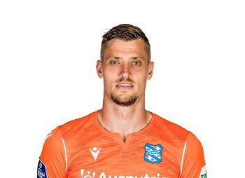

Andries Noppert
Heerenveen
28 Anos
Andries Noppert é um futebolista holandês que atua como goleiro.

Holanda, é uma região histórica no centro-oeste dos Países Baixos. Foi um condado do Sacro Império Romano-Germânico e mais tarde a liderança da República das Sete Províncias Unidas dos Países Baixos. A área é hoje dividida em duas províncias: Holanda do Norte e Holanda do Sul, criadas em 1840.

Andries Noppert é um futebolista holandês que atua como goleiro.
Justin Bijlow é um futebolista holandês que atua como goleiro.
Remko Pasveer é um futebolista holandês que atua como goleiro.
Daley Bilind é um futebolista holandês que atua como defensor.
Denzel Dumfries é um futebolista holandês que atua como defensor.
Jeremie Frimpong é um futebolista holandês que atua como defensor.
Jurrien Timber é um futebolista holandês que atua como defensor.
Matthijs De Ligt é um futebolista holandês que atua como defensor.
Nathan Aké é um futebolista holandês que atua como defensor.
Stefan De Vrij é um futebolista holandês que atua como defensor.
Tyrell Malacia é um futebolista holandês que atua como defensor.
Virgil Van Djik é um futebolista holandês que atua como defensor.

Xavi Simons é um futebolista holandês que atua como Meio-campista.
Cody Gakpo é um futebolista holandês que atua como Meio-campista.
Davy Klassen é um futebolista holandês que atua como Meio-campista.
Frenkie De Jong é um futebolista holandês que atua como Meio-campista.
Kenneth Taylor é um futebolista holandês que atua como Meio-campista.
Marten De Roon é um futebolista holandês que atua como Meio-campista.
Steven Berghuis é um futebolista holandês que atua como Meio-campista.
Teun Koopmeiners é um futebolista holandês que atua como Meio-campista.
Luuk De Jong é um futebolista holandês que atua como Atacante.
Memphis Depay é um futebolista holandês que atua como Atacante.
Noa Lang é um futebolista holandês que atua como Atacante.
Steven Bergwijn é um futebolista holandês que atua como Atacante.
Vincent Janssen é um futebolista holandês que atua como Atacante.
Wout Weghorst é um futebolista holandês que atua como Atacante.